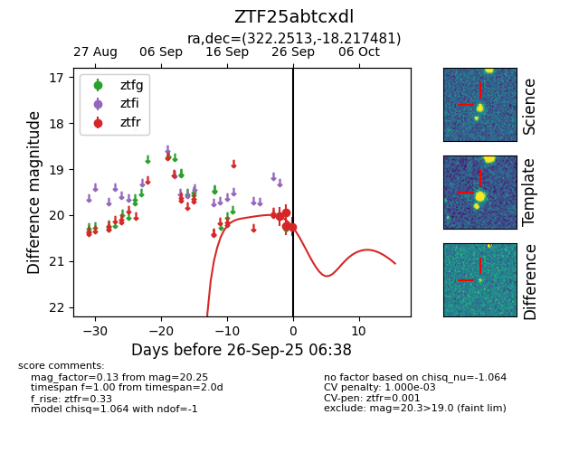
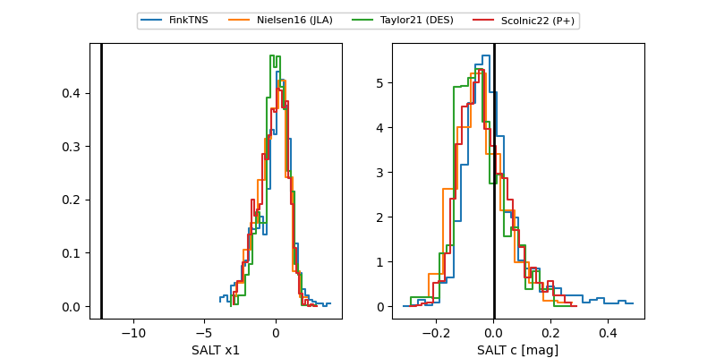

FINK: ZTF25abtcxdl
Lasair: ZTF25abtcxdl
ALeRCE: ZTF25abtcxdl
ZTF25abtcxdl (ztf,fink)
equatorial (ra, dec) = (322.2513,-18.21748)
galactic (l, b) = (32.6697,-42.76920)


last ztfr=20.25
4 ztfr detections